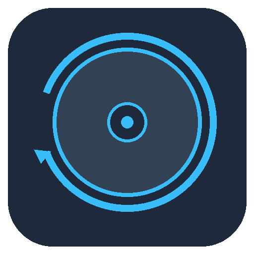

Disk Recovery ToolA free, open-source toolchain for imaging a damaged/failing disk sector by sector, then recovering exFAT files by parsing filesystem metadata directly — with signature-based carving as a fallback for what metadata recovery can't rebuild. A graphical front-end wraps all of it for Windows, macOS and Linux.
Portable, single-file executables — nothing to install. All builds and source: Releases · Source on GitHub
\\.\PhysicalDriveN) only works on
Windows today — the imager talks to the Win32 device API directly. macOS/Linux builds of
the GUI can still scan/recover/carve from an image file (.img/.rci)
produced elsewhere.Sector-by-sector copy with retries, bad-sector skipping, and resume — splits across multiple destination disks when none of them alone can hold the source.
Walks the exFAT boot sector, FAT, and directory entries directly to recover files with their original names and folder structure — including deleted files.
Signature-based fallback for data whose directory entry is gone: finds known file headers in whatever region metadata recovery couldn't claim.
Every read is tracked as good/bad/unknown in a durable, checksummed map, so a file is only ever reported complete if every byte of it was actually read.
A metadata-only scan writes a filterable plan (by extension, path, size, date) so you can recover exactly what you need when the destination is smaller than the source.
Open source. Nothing leaves your machine — no cloud upload, no telemetry, no cost.
Run the imager against the failing drive first — never work directly on the source.
Scan the image, filter what you need, then recover it with original names and folders.
Run the carver over whatever region recovery couldn't claim, as a last resort.